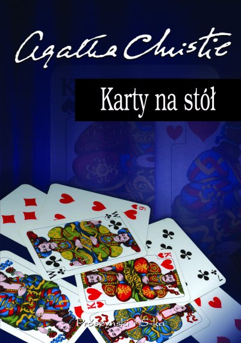
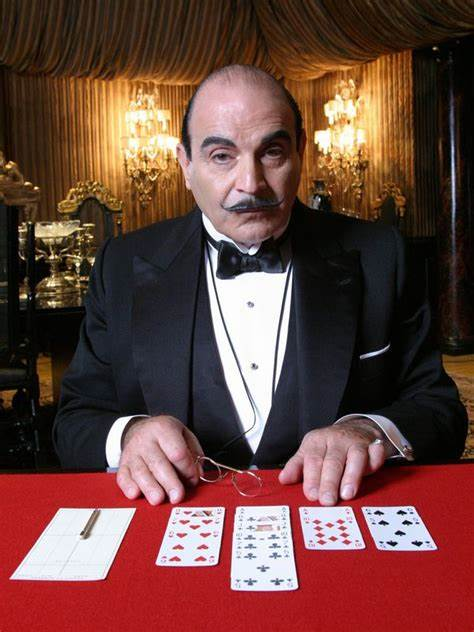

Karty na stół
Karty na stół , powieść kryminalna Agaty Christie. Wydana w 1936 roku.Poirot został zaproszony na wieczorne granie w brydża, podczas przyjęcia został zamordowany gospodarz. A mordercą musiałbyć jeden z graczy, jak jedyną poszlakę belgisjki detektyw miał zapis z rozegranych partii brydża.Na ich podstawie musiał stworzyć porter psychologiczny sprawcy i wskazać mordercę spośród gości.

